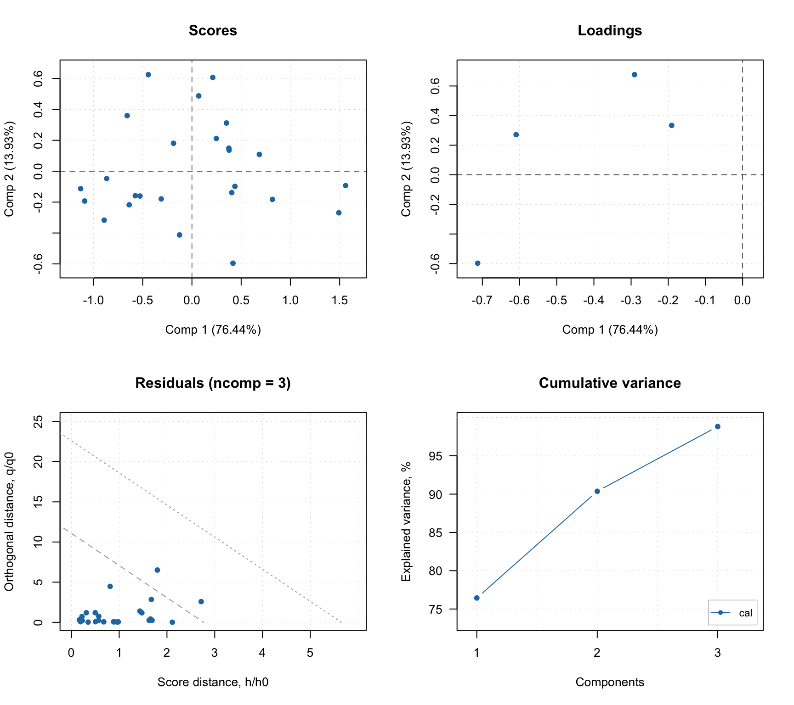
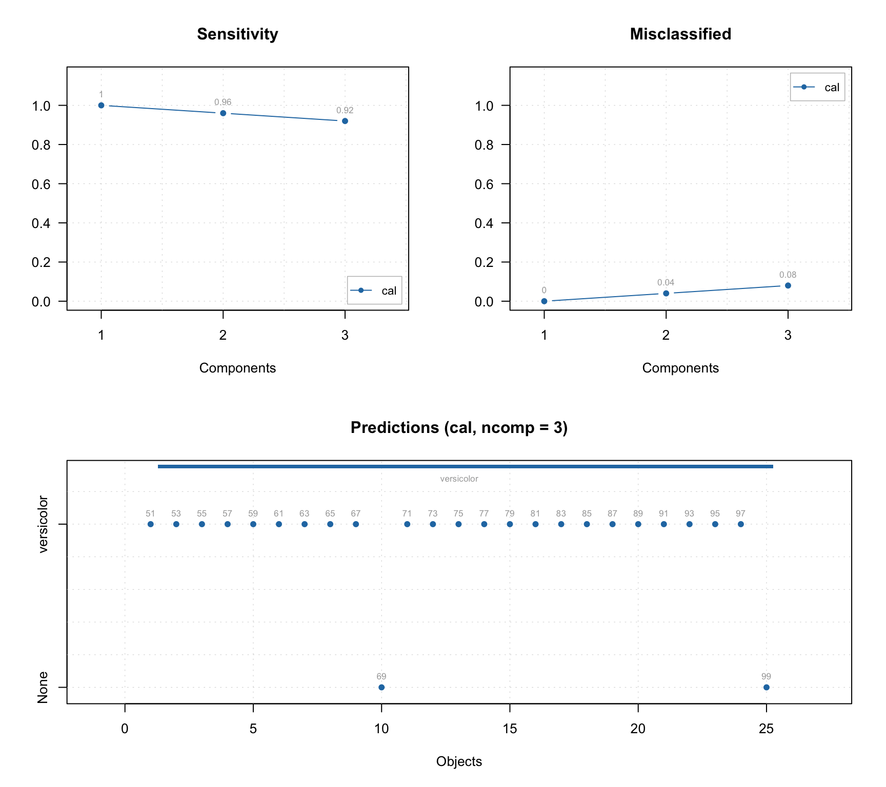
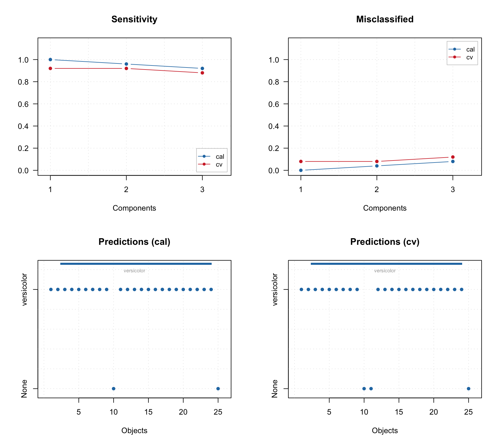
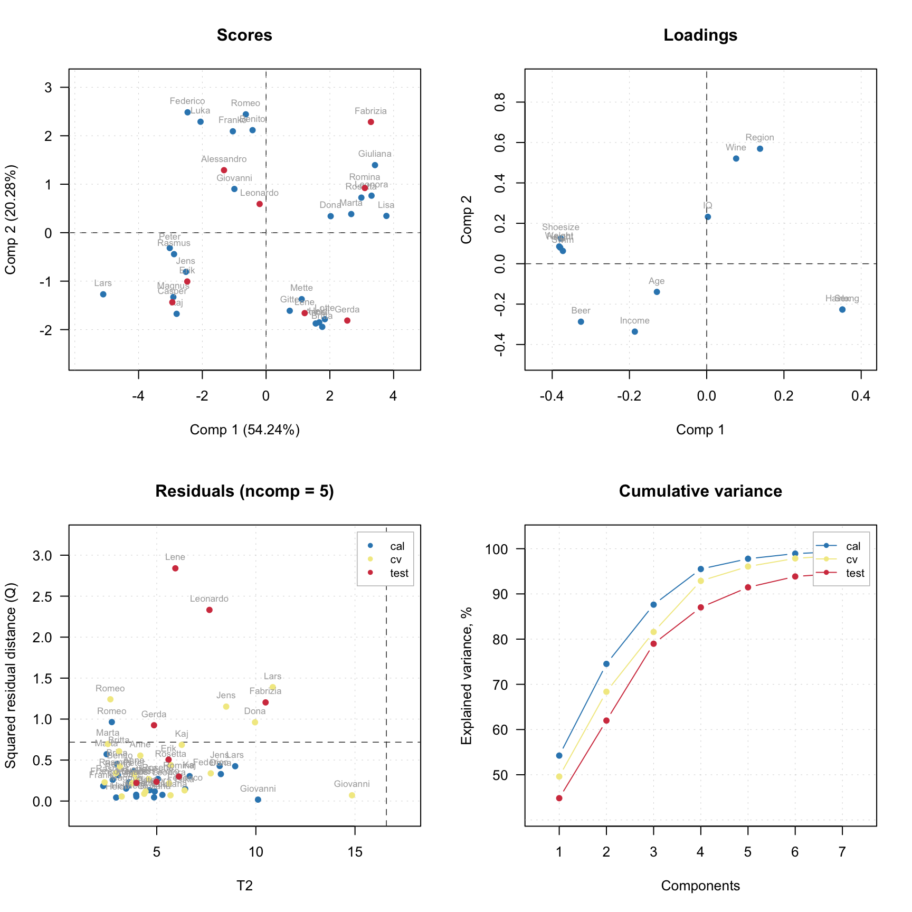
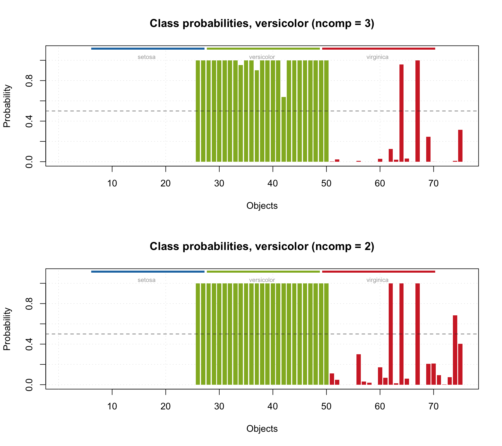

Calibration and validation
The model calibration is similar to PCA, but there are several additional arguments, which are important for classification. First of all it is a class name, which is a second mandatory argument. Class name is a string, which can be used later e.g. for identifying class members for testing. The second important argument is a level of significance, alpha. This parameter is used for calculation of statistical limits and can be considered as probability for false negatives. The default value is 0.05. Finally the parameter lim.type allows to select the method for compuring critical limits for the distances, as it is described in the PCA chapter. By default lim.type = "ddmoments" as in PCA.
In this chapter as well as for describing other classification methods we will use a famous Iris dataset, available in R. The dataset includes 150 measurements of three Iris species: Setosa, Virginica and Versicola. The measurements are length and width of petals and sepals in cm. Use ?iris for more details.
Let’s get the data and split it to calibration and test sets.
## Sepal.Length Sepal.Width Petal.Length Petal.Width Species
## 1 5.1 3.5 1.4 0.2 setosa
## 2 4.9 3.0 1.4 0.2 setosa
## 3 4.7 3.2 1.3 0.2 setosa
## 4 4.6 3.1 1.5 0.2 setosa
## 5 5.0 3.6 1.4 0.2 setosa
## 6 5.4 3.9 1.7 0.4 setosa# generate indices for calibration set
idx = seq(1, nrow(iris), by = 2)
# split the values
Xc = iris[idx, 1:4]
cc = iris[idx, 5]
Xt = iris[-idx, 1:4]
ct = iris[-idx, 5]Now, because for calibration we need only objects belonging to a class, we will split the X.c into three matrices — one for each species. The data is ordered by the species, so it can be done relatively easy by taking every 25 rows.
Let’s start with creating a model for class Versicolor and exploring available statistics and plots. In this case default values for method and significance level to compute the critical limits (lim.type = "ddmoments" and alpha = 0.05) are used.
##
## SIMCA model for class 'versicolor' summary
##
##
## Number of components: 3
## Type of limits: ddmoments
## Alpha: 0.05
## Gamma: 0.01
##
## Expvar Cumexpvar TP FP TN FN Spec. Sens. Accuracy
## Cal 8.45 98.82 23 0 0 2 NA 0.92 0.92The summary output shows (in addition to explained and cumulative explained variance) number of true positives, false positives, true negatives, false negatives as well as specificity, sensitivity and accuracy of classification. All statistics are shown for each available result object (in this case only calibration) and only for optimal number of components (in this case 3).
The summary plot look very much similar to what we have seen for PCA.

In addition to standard PCA plots, SIMCA model (as well as any other classification model, e.g. PLS-DA) can show plot for sensitivity and ratio of misclassified values depending on the number of components. Plus a prediction plot, which shows classification results for each object. See the example below.
layout(matrix(c(1, 3, 2, 3), ncol = 2))
plotSensitivity(m, show.labels = TRUE)
plotMisclassified(m, show.labels = TRUE)
plotPredictions(m, show.labels = TRUE)
Cross-validation
SIMCA model can be also cross-validated. Cross-validation settings are provided using parameter cv which can be either a number of a list. If it is a number, segmented cross-validation with random split will be used. The number then defines number of segments with one exception — if cv = 1 then full cross-validation (leave-one-out) will be used.
Alternatively you can specify the cross-validation settings as a list. There are three options: cv = list("full") allows to do full cross-validation. If you specify cv = list("ven", nseg) then systematic cross-validation with nseg segments will be used (venetian blinds). Finally, cv = list("rand", nseg, nrep) will run random cross-validation with nseg segments and nrep repetitions/iterations.
When cross-validation is used, only performance statistics will be computed (in this case classification performance). Therefore cross-validated result object will not contain scores, residuals, explained variance etc. and corresponding plots will not be available.
All performance plots are also available for cross-validation results as shown below.
m = simca(X.ver, "versicolor", ncomp = 3, cv = 1)
par(mfrow = c(2, 2))
plotSensitivity(m)
plotMisclassified(m)
plotPredictions(m$res$cal, main = "Predictions (cal)")
plotPredictions(m$res$cv, main = "Predictions (cv)")
Although predictions plot available also for classification model it always shows results only for one result object, otherwise it would be overloaded with information. As you can see from the predictions plots above, cross-validation results have 3 false negatives comparing to 2 for calibration results. You can also see this in summary text, where cross-validation results are shown in the second row:
##
## SIMCA model for class 'versicolor' summary
##
##
## Number of components: 3
## Type of limits: ddmoments
## Alpha: 0.05
## Gamma: 0.01
##
## Expvar Cumexpvar TP FP TN FN Spec. Sens. Accuracy
## Cal 8.45 98.82 23 0 0 2 NA 0.92 0.92
## Cv NA NA 22 0 0 3 NA 0.88 0.88Note, that columns with variance are not available for cross-validation (have NA values).
Predictions and validation with a test set
When model is calibrated and optimized, one can test it using a new test set with know classes. In this case we will use objects from all three species and be able to see how good the model performs on strangers (and calculate the specificity). In order to do that we will provide both matrix with predictors, Xt, and a vector with names of the classes for corresponding objects/rows (ct). The values with known classes in this case can be:
- a vector with text values (names)
- a factor using the names as labels (also as a vector)
- a vector with logical values (
TRUEfor class members andFALSEfor strangers)
In our case we have a vector with text values, which will be automatically converted to a factor by the function predict(). Instead of creating a new model and providing the values as test set we will simply make predictions.
##
## Summary for SIMCA one-class classification result
##
## Class name: versicolor
## Number of selected components: 3
##
## Expvar Cumexpvar TP FP TN FN Spec. Sens. Accuracy
## Comp 1 64.27 64.27 25 4 46 0 0.92 1 0.947
## Comp 2 1.67 65.95 25 4 46 0 0.92 1 0.947
## Comp 3 32.45 98.40 25 2 48 0 0.96 1 0.973In this case we can also see the specificity values and corresponding plot can be made, as shown below together with other plots.
par(mfrow = c(2, 2))
plotSpecificity(res, show.labels = TRUE)
plotSensitivity(res, show.labels = TRUE)
plotMisclassified(res, show.labels = TRUE)
plotPredictions(res)
As you can see, the prediction plot looks a bit different in this case. Because the test set has objects from several classes and the class belongings is known, this information is shown as color bar legend. For instance, in the example above we can see, that two Virginica objects were erroneously classified as members of Versicolor.
You can also show the predictions as a matrix with \(-1\) and \(+1\) using method showPredictions() or get the array with predicted class values directly as it is shown in the example below (for 10 rows in the middle of the data, different number of components and the first classification variable).
## Comp 1 Comp 2 Comp 3
## 90 1 1 1
## 92 1 1 1
## 94 1 1 1
## 96 1 1 1
## 98 1 1 1
## 100 1 1 1
## 102 -1 -1 -1
## 104 -1 -1 -1
## 106 -1 -1 -1
## 108 -1 -1 -1
## 110 -1 -1 -1You can also get and show the confusion matrix (rows correspond to real classes and columns to the predicted class) for an object with SIMCA results (as well as results obtained with any other classification method, e.g. PLS-DA).
## versicolor None
## versicolor 25 0
## setosa 0 25
## virginica 2 23Class belonging probabilities
In addition to the array with predicted class, the object with SIMCA results also contains an array with class beloning probabilities. The probabilities are calculated depending on how close a particular object is to the the critical limit border.
To compute the probability we use the theoretical distribution for score and orthogonal distances as when computing critical values (defined by the parameter lim.type). The distribution is used to calculate a p-value — chance to get object with given distance value or larger. The p-value is then compared with signidicance level, \(\alpha\), and the probability, \(\pi\) is calculated as follows:
\[\pi = 0.5 (p / \alpha) \]
So if p-value is the same as significance level (which happens when object is lying exactly on the acceptance line) the probability is 0.5. If p-value is e.g. 0.04, \(\pi = 0.4\), or 40%, and the object will be rejected as a stranger (here we assume that the \(\alpha = 0.05\)). If the p-value is e.g. 0.06, \(\pi = 0.6\), or 60%, and the object will be accepted as a member of the class. If p-value is larger than \(2\times\alpha\) the probability is set to 1.
In case of rectangular acceptance area (lim.type = 'jm' or 'chisq') the probability is computed separately for \(q\) and \(h\) values and the smallest of the two is taken. In case of triangular acceptance area (lim.type = "ddmoments" or "ddrobust") the probability is calculated for a full distance, \(f\).
Here is how to show the probability values, that correspond to the predictions shown in the previous code chunk. I round the probability values to four decimals for better output.
## Comp 1 Comp 2 Comp 3
## 90 1.0000 1.0000 1.0000
## 92 1.0000 1.0000 1.0000
## 94 1.0000 1.0000 1.0000
## 96 1.0000 1.0000 1.0000
## 98 1.0000 1.0000 1.0000
## 100 1.0000 1.0000 1.0000
## 102 0.0376 0.1121 0.0028
## 104 0.0285 0.0477 0.0216
## 106 0.0000 0.0000 0.0000
## 108 0.0006 0.0002 0.0000
## 110 0.0001 0.0000 0.0000It is also possible to show the probability values as a plot with method plotProbabilities():
par(mfrow = c(2, 1))
plotProbabilities(res, cgroup = ct)
plotProbabilities(res, ncomp = 2, cgroup = ct)
The plot can be shown for any SIMCA results (including e.g. calibration set or cross-validated results).